Işılda slaytları
BUGÜN yazanı aç → Hepsini kaydet → TikTok'ta paylaş.

4 habits aging you faster2026-10-14 · 1. paylaşım · 6 slayt

Damaged skin barrier signs2026-10-15 · 1. paylaşım · 5 slayt
Fall routine switch2026-10-15 · 2. paylaşım · 6 slayt

Skincare order2026-10-16 · 1. paylaşım · 5 slayt
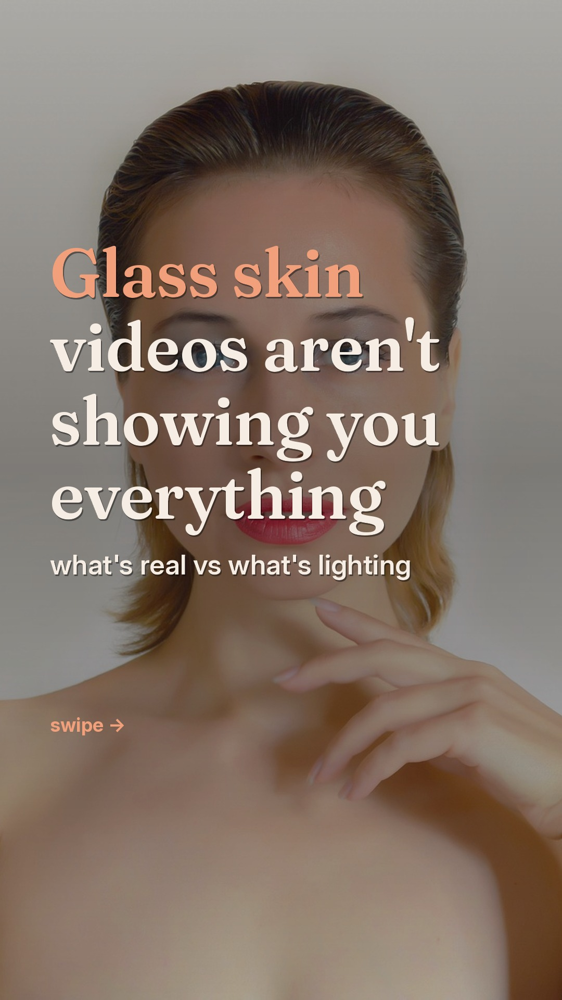
Glass skin myths2026-10-16 · 2. paylaşım · 6 slayt

Is your routine working?2026-10-17 · 1. paylaşım · 6 slayt
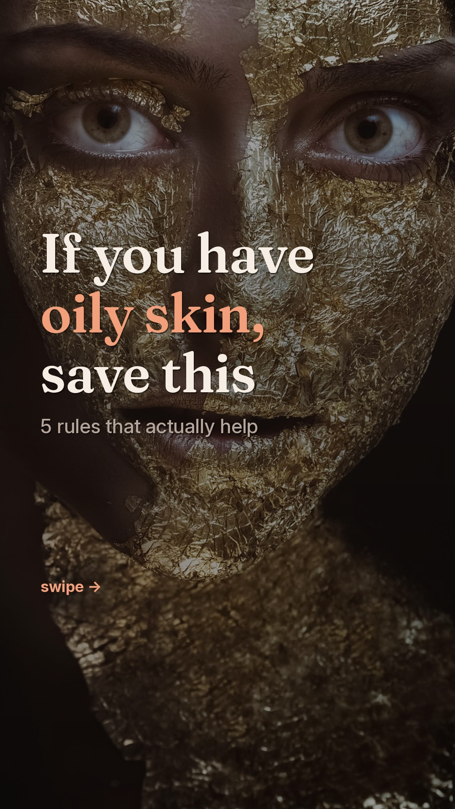
Oily skin rules2026-10-17 · 2. paylaşım · 7 slayt

Skin type test2026-10-18 · 1. paylaşım · 5 slayt
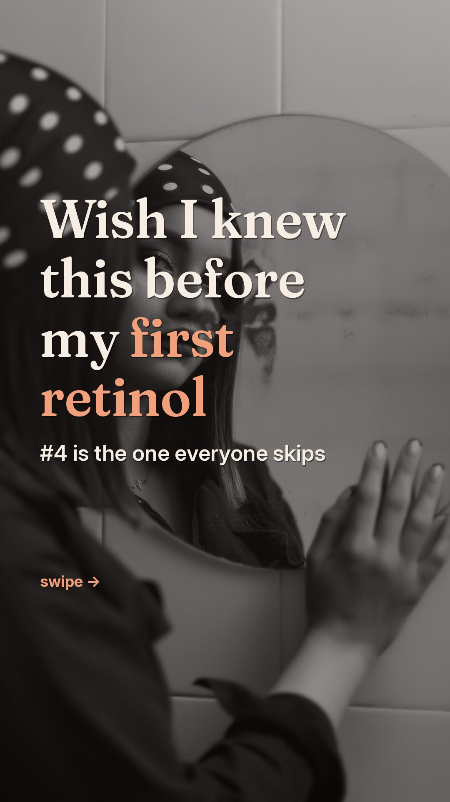
First retinol tips2026-10-18 · 2. paylaşım · 7 slayt
Dry skin habits to drop2026-10-19 · 1. paylaşım · 6 slayt
Slugging vs moisturizer2026-10-19 · 2. paylaşım · 7 slayt
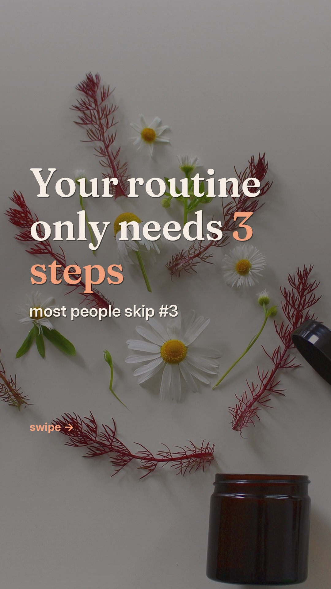
The 3-step routine2026-10-20 · 1. paylaşım · 6 slayt
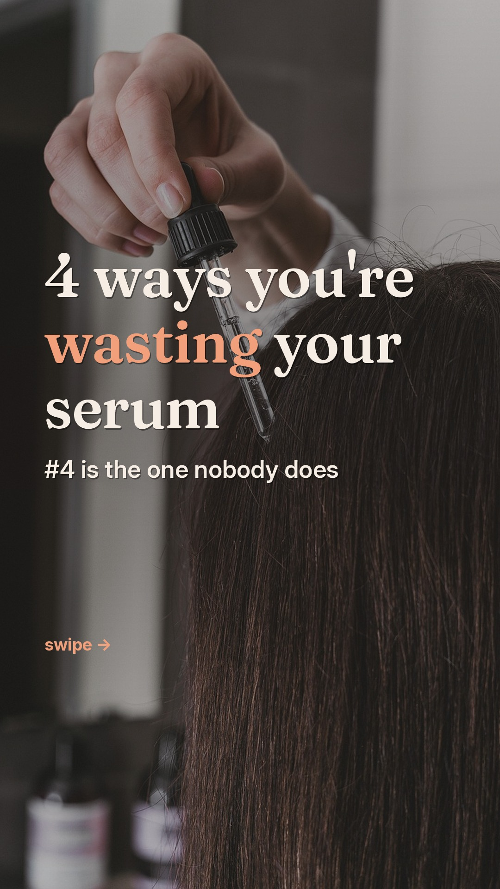
Serum mistakes2026-10-20 · 2. paylaşım · 6 slayt
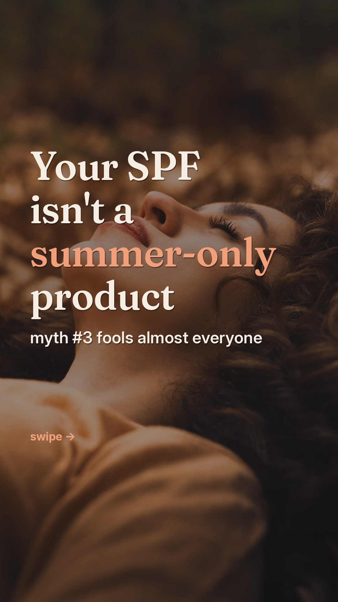
Fall SPF myths2026-10-21 · 1. paylaşım · 6 slayt
Exfoliating too often2026-10-21 · 2. paylaşım · 7 slayt
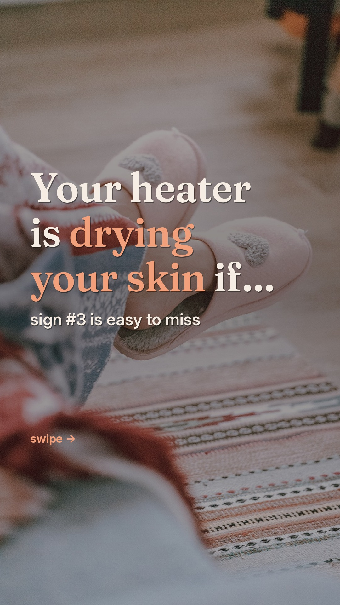
Heater drying your skin2026-10-22 · 1. paylaşım · 7 slayt
Niacinamide timeline2026-10-22 · 2. paylaşım · 7 slayt
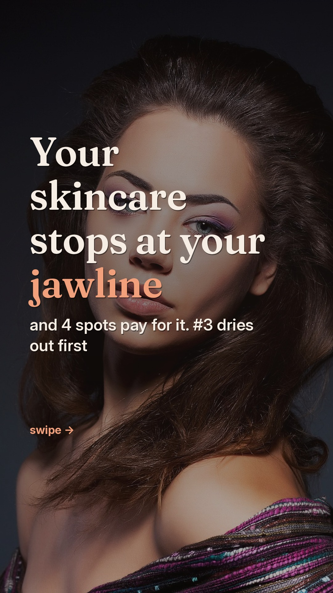
Spots your routine skips2026-10-23 · 1. paylaşım · 7 slayt
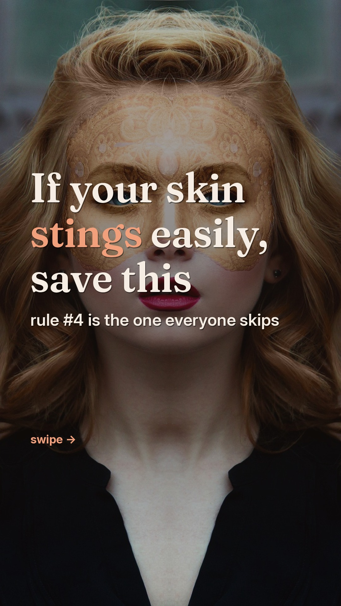
Sensitive skin rules2026-10-23 · 2. paylaşım · 7 slayt
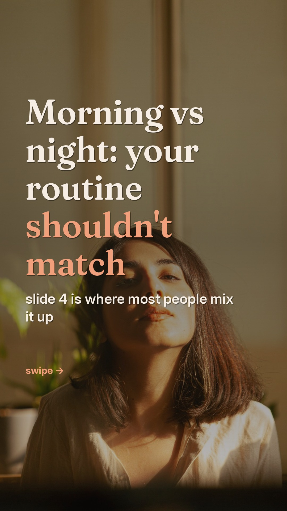
Morning vs night routine2026-10-24 · 1. paylaşım · 7 slayt
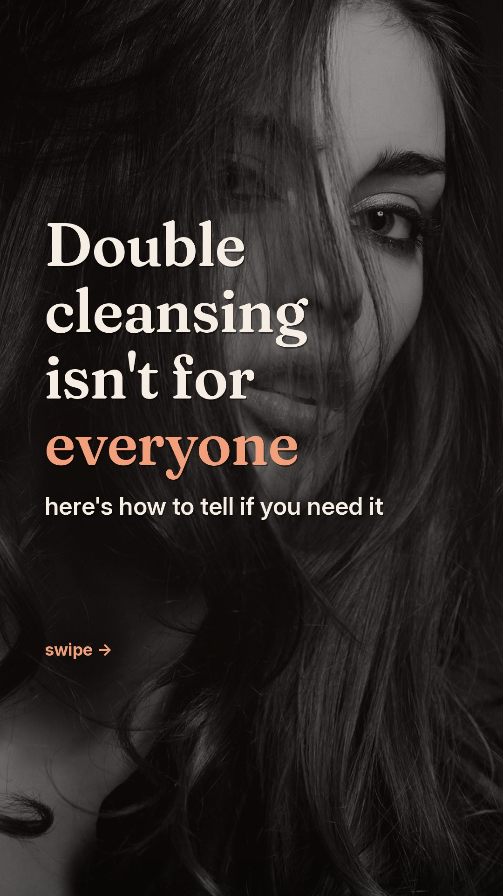
Double cleansing: who needs it2026-10-24 · 2. paylaşım · 7 slayt
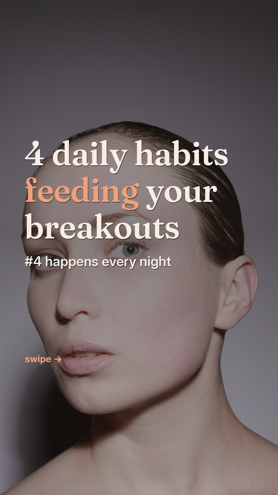
Habits behind your breakouts2026-10-25 · 1. paylaşım · 7 slayt
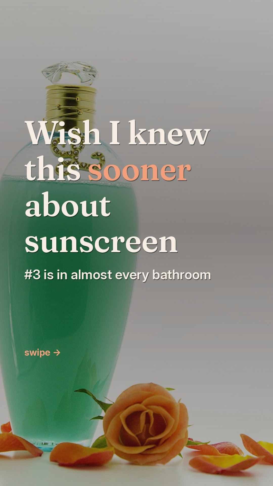
Sunscreen: what I wish I knew2026-10-25 · 2. paylaşım · 7 slayt
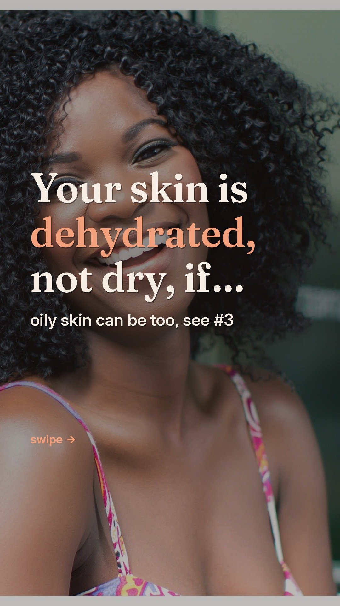
Dehydrated, not dry2026-10-26 · 1. paylaşım · 7 slayt

Pore myths2026-10-26 · 2. paylaşım · 7 slayt
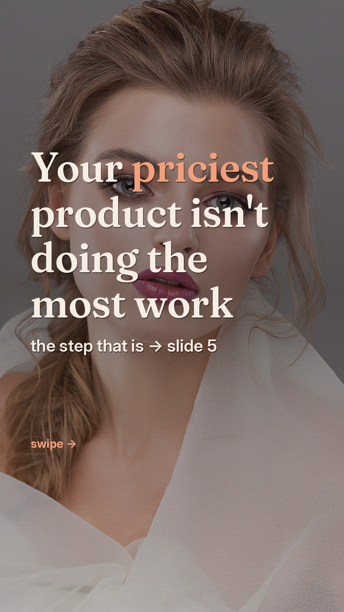
Price vs results2026-10-27 · 1. paylaşım · 7 slayt
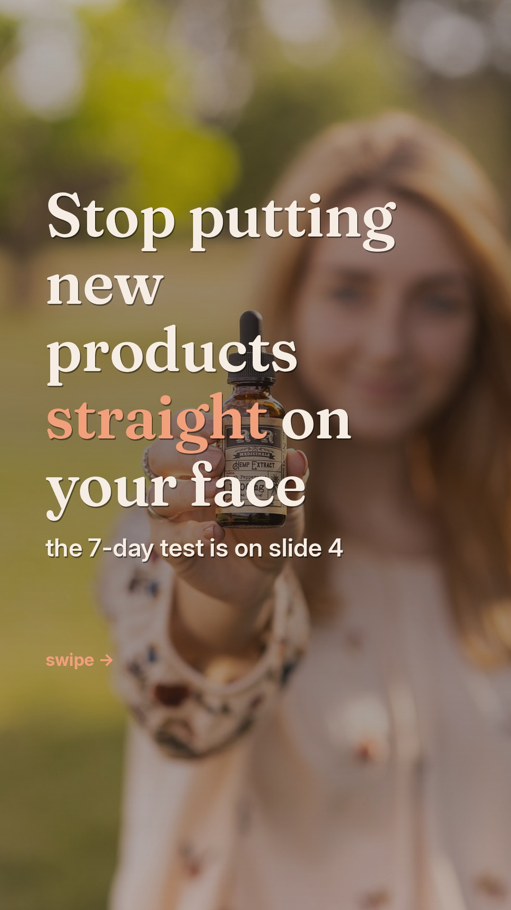
Patch test first2026-10-27 · 2. paylaşım · 7 slayt
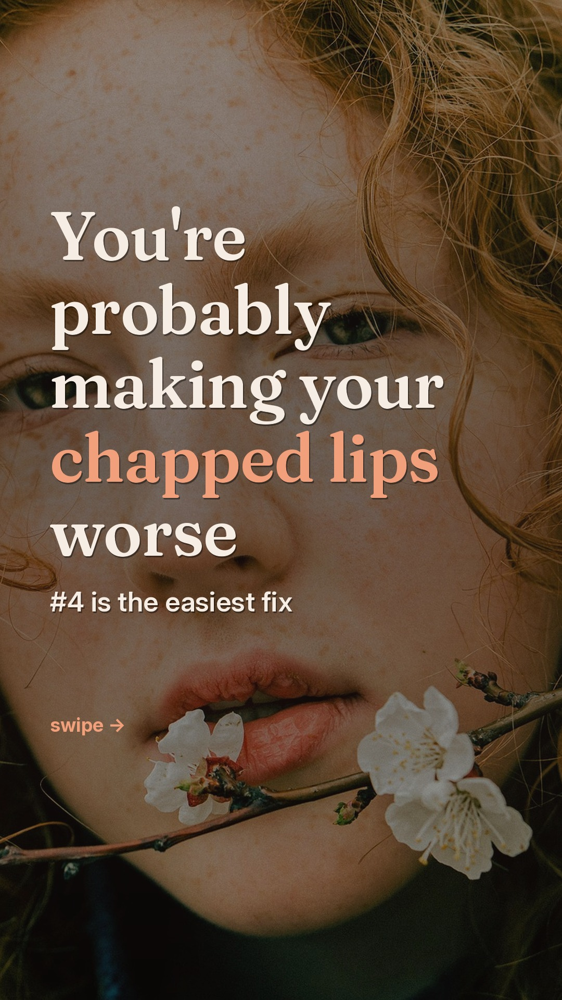
Chapped lip habits2026-10-28 · 1. paylaşım · 7 slayt
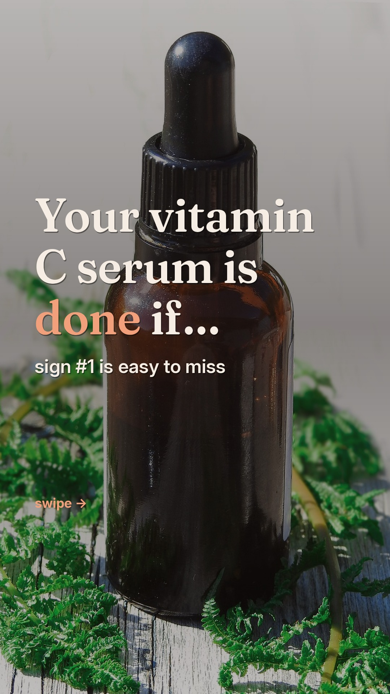
Has your vitamin C gone bad?2026-10-28 · 2. paylaşım · 6 slayt